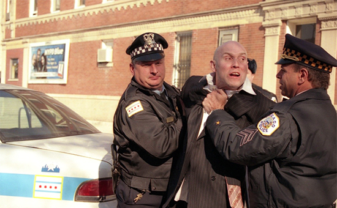
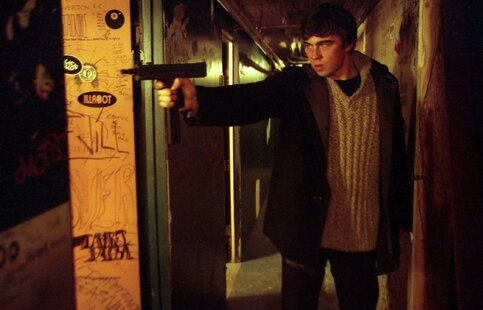
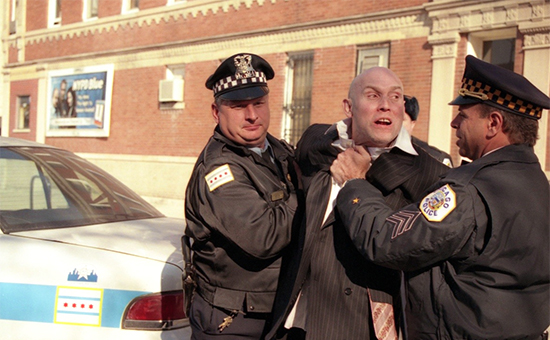
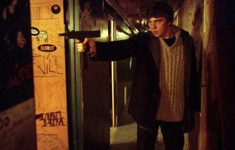

Картина «Брат» рассказывает о простом русском парне Даниле Багрове (Сергей Бодров-младший), который возвращается из армии в свой небольшой городок. Его мать считает, что Даниле следует поехать в Санкт-Петербург, где живёт его старший брат Виктор (Виктор Сухоруков), и Данила соглашается попытать счастья в мегаполисе.Приехав в Санкт-Петербург, Данила обнаруживает, что Виктор стал бандитом и наёмным убийцей по кличке Татарин. Криминальный авторитет Круглый даёт Виктору задание убить некоего Чечена, владельца рынка. Сам Круглый планирует убить Виктора, когда тот будет выполнять его задание, но Виктор начинает подозревать неладное. Он просит Данилу пойти на дело вместо него, и Данила соглашается. Он успешно справляется с задачей, но попадает в засаду, устроенную людьми Круглого, и, тяжело раненый, убегает от них на грузовом трамвае, где ему помогает девушка Света, вагоновожатая.
| Год | 1997 |
| Cтрана | Россия |
| Жанр | боевик, драмма, криминальный фильм, иностранное кино |
| Режиссер | Алексей Балабанов |
Россия, 1994 год. Никому не известный математик-одиночка Сергей Кондратьевич Мамонтов ищет, куда применить себя и свой интеллект. И заказывает макет «ценной бумаги» (прототип — Билет МММ) с имперской вязью, богатым орнаментом, водяными знаками и собственным портретом в самом центре. Начинается активная рекламная кампания. Чуть больше двух недель оказывается достаточно, чтобы народ выстроился в очереди за «мамонтовками». И могущественные банкиры, и госструктуры в растерянности — никто не имеет понятия, как это прекратить, а в МММ уже набралось больше 10 миллионов вкладчиков. Дальше Мамонтов озабочен тем, что в стране нет богатых людей, а на приватизацию выставлена вся советская промышленность. Он аккумулирует «частные жадности» и решает провести честную приватизацию. На пути у него встаёт агент западного империализма — Белявский (аллюзия на Б. А. Березовского) со своим МегаВАЗ-банком (аллюзия на ЛогоВАЗ). Белявский заходит сверху — заводит связи в Кремле и возглавляет телевидение. На «стрелке» Белявский предлагает поделить Россию. Мамонтов отказывается: «Я Россией не торгую!», чем навлекает на себя финансовую инспекцию, которая без проверки документов выставляет ему немыслимые требования об уплате налогов, которые Мамонтов исполняет. Денег ещё хватает на разорение банка Белявского.
| Год | 2011 |
| Cтрана | Россия |
| Жанр | криминальный жанр, драмма, иностранное кино |
| Режиссер | Эльдар Алаватов |
Москва, 1999 год[5]. Данилу Багрова и его боевых друзей приглашают поучаствовать в съёмке телепередачи Ивана Демидова «В мире людей» на телеканале «ТВ-6», посвящённой героям Чеченской войны. В коридорах останкинского телецентра Данила встречает Ирину Салтыкову, но не узнаёт в ней знаменитость, поскольку совсем не слушает поп-музыку. После передачи Данила отдыхает со своими друзьями в бане, где один из них — Константин Громов, работающий охранником в Николаевском банке — сообщает о проблеме, возникшей у его брата-близнеца Дмитрия Громова, хоккеиста НХЛ: американский бизнесмен Ричард Мэннис, первоначально согласившийся защитить спортсмена от украинской мафии в США, сейчас при помощи кабального контракта забирает почти все деньги, которые тот зарабатывает. У Мэнниса есть финансовые интересы в России, из-за которых он как раз сейчас приехал в Москву для встречи с руководителем Николаевского банка Валентином Белкиным. Константин собирается сам попросить Белкина поговорить с американцем. Белкин действительно упоминает в беседе с Мэннисом хоккеиста, но тот меняет тему разговора. Тогда Белкин даёт указание помощникам «разобраться» с Константином, чтобы он не вмешивался и не портил его отношения с Мэннисом, но те, неправильно поняв своего шефа, убивают Константина. Данила, выполняя последнюю просьбу своего боевого товарища, спасшего ему жизнь, решает помочь его брату-близнецу. Для этого ему нужно ехать в США и заставить американского бизнесмена вернуть брату убитого друга заработанные им деньги.
 



| Год | 2000 |
| Cтрана | Россия |
| Жанр | боевик, драмма, криминальный фильм, иностранное кино |
| Режиссер | Алексей Балабанов |